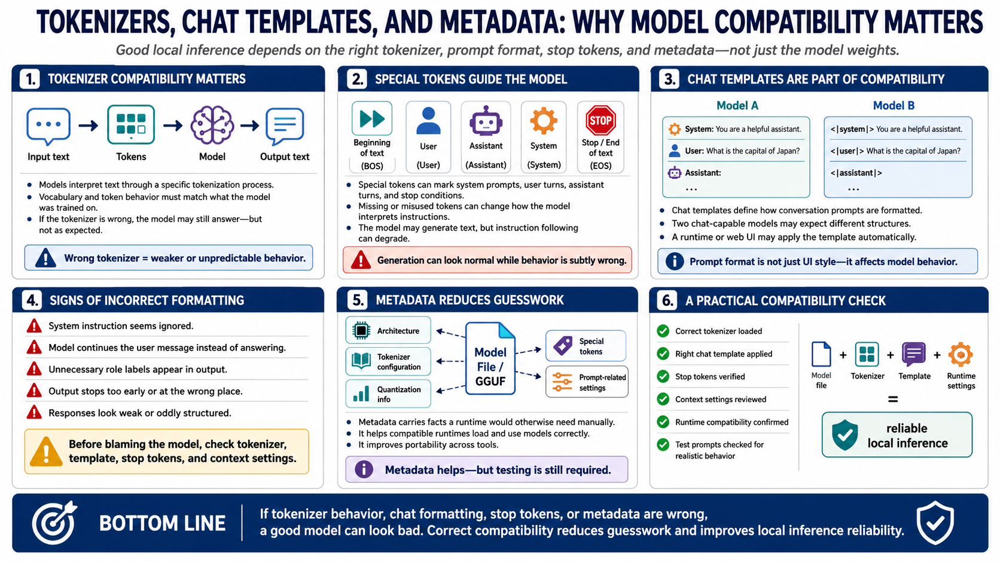

Metadata, Tokenizers, and Prompt Formatting
Connecting to LMS... Progress: in progress

Narration
Tokenizer compatibility matters because the model was trained to interpret text through a specific tokenization process. Special tokens may mark the beginning of text, user messages, assistant messages, system prompts, or stop conditions. If those tokens are missing or misused, the model may still generate text, but it may not follow instructions in the way the user expects.
Chat templates define how conversational prompts are formatted for a model. Two models may both support chat, but one may expect a system message in a particular structure while another expects different role markers or separators. A web UI or runtime may apply the template automatically, but users should still understand the concept. Prompt formatting is part of model compatibility, not just interface style.
Incorrect formatting can produce weak, oddly structured, or less aligned output. The model may ignore a system instruction, continue a user message instead of answering, include unnecessary role labels, or stop too early. These issues can look like model quality problems when the real cause is configuration. Before blaming a model, verify that the runtime is using the right tokenizer, chat template, stop tokens, and context settings.
Metadata helps runtimes load and use models correctly by carrying facts that would otherwise need to be supplied manually. It can identify architecture, tokenizer configuration, quantization information, and sometimes prompt-related settings. Metadata does not remove the need for testing, but it reduces guesswork and makes local inference workflows more portable across compatible tools.